We visited Sri Lanka and Maldives through Kesari Travels. We paid Rs 2,25,000/- in January 2018 for the March trip for two persons, including the visa fee. While making the payments, we handed over the passports for the visa. It is only an e-visa, so we need not run around to any consulate.
We visited Colombo, Pinnawala, Dambulla, Kandy, and Nuwara Eliya. This country resembles India in many aspects. The natural scenery is very similar to Kerala: lots of ponds, coconut trees, banana trees, etc. Highways are not very broad, and buses go at a moderate speed.
People mainly follow Buddhism. Many Buddhist temples are there. We could see lots of Chinese tourists, so most of the hotels here provide mainly non-veg food. In this country, a three-language formula is adopted: Sinhalese, Tamil, and English.
We could interact with a few Tamilians. Apparently, it looks from their talk that their life became worse after the Tamil Eelam activities. In one of the hotels, we could speak with a few Tamil bearers. They were so kind and showed lots of affinity since we are Tamilians. It is difficult for them to come to India and start their livelihood, and at the same time, they find it difficult to lead a normal life there. It looks like there is some discrimination in public places, which obviously humiliates them.
The Journey Begins
9th March 2018: Mrs. Bhoomi, the Tour Manager from Kesari, escorted our group throughout from Mumbai airport. On that day, I received a call from her; she introduced herself and also made a WhatsApp group which helped us to keep in touch with everyone in this group throughout.
Our flight to Colombo from Mumbai was in the early morning of 10th March. We left Pune around 6:30 pm on the 9th and went to Mumbai by Volvo bus. We got down at Andheri and took an auto from there to the International Airport. After reaching the airport, we ate our packed dinner. By that time, Kesari representatives came and handed over our passports, tickets, and eatable packs.
It was a Sri Lankan flight. The flight took off at 4 am on 10th March. Colombo from Mumbai is around a 2-hour journey. Sri Lanka and India timings are the same, so it was needless to set our wristwatches. Around 6 am on 10th March, we landed at Colombo airport.
Arrival in Sri Lanka: Pinnawala & Dambulla
10th March 2018: After landing, immigration was done, and we collected our check-in baggage. In the airport, all signboards are written in three languages: Sinhalese, Tamil, and English. Their Tamil is quite different from our Tamil.
From the airport, we boarded an AC bus. The local guide was there to receive us. He welcomed us with their phrase ‘Ayubowan’. The meaning of ‘Ayubowan’ is "live long years." Irrespective of age, this phrase is used by all to welcome anyone (in our place, it is generally used by an elder to bless a younger one). Close to the airport, he took us to a restaurant for breakfast. The breakfast was not in the usual Kesari style; it was just okay.
Pinnawala Elephant Orphanage
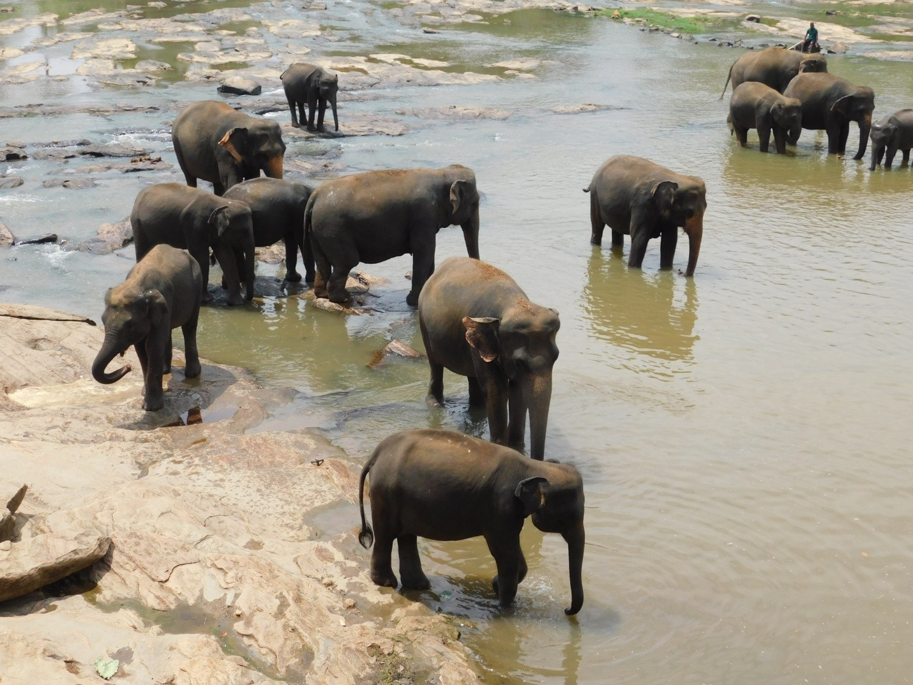
After breakfast, we proceeded to a city called Pinnawala. It is about a 3-hour journey. The road was narrow. Both sides were full of greenery, mostly coconut trees. The weather was quite good. At Pinnawala, we visited the elephant orphanage. Here, about 100 elephants are taken care of. Many baby elephants are also there. Every day they are fed with milk and other nutritious food.
Every day these elephants are taken to the nearby Maha Oya river where they spend an hour in the river and come back to the orphanage. This orphanage was created in 1975 mainly to protect baby orphan elephants. This orphanage is the biggest one in Asia. We saw the spectacular sight of them going together to the river Maha Oya, playing for an hour, and returning back to the orphanage.
After the visit to the Elephant Orphanage, we had our lunch in a hotel and proceeded to the city called Dambulla. It is about a four-hour journey. On the way, we had a break for 30 minutes and had tea. Here also the road was narrow, so the Volvo bus was going at a moderate speed of 40-50 km per hour.
We reached resort Paradise around 5:30 pm. This resort is really beautiful. That night's stay was comfortable.
Sigiriya & The Golden Temple
11th March 2018: After breakfast, we proceeded to the fortress Sigiriya located close to the city Dambulla. The name of this place is derived from this structure — Sīhāgiri, the Lion Rock. This rock is very steep and about 200 meters high. According to ancient Sri Lankan legend, this site was selected by King Kasyapa (477 – 495 AD). Sigiriya today is a UNESCO-listed World Heritage site.
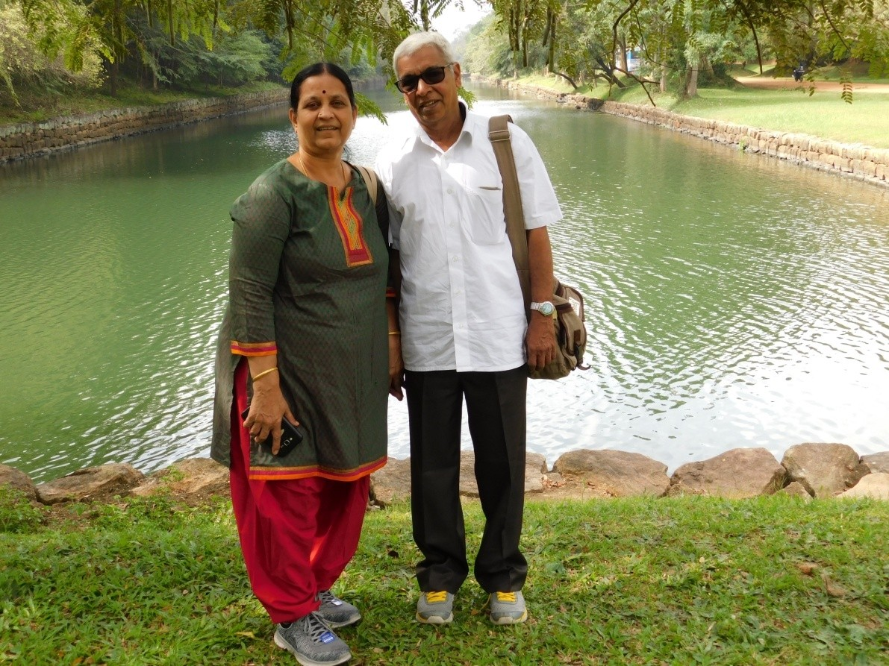
Steps are made to reach the top of the rock where the fortress is. Though some of our people went to the top, considering our upcoming US trip, we decided not to take any adventurous activity, so we did not climb up the hill. Instead, the Kesari guide arranged an auto-rickshaw to go around Sigiriya Rock to see beautiful viewpoints. We saw about 10 viewpoints, and in all spots, we could see the Sigiriya rock.
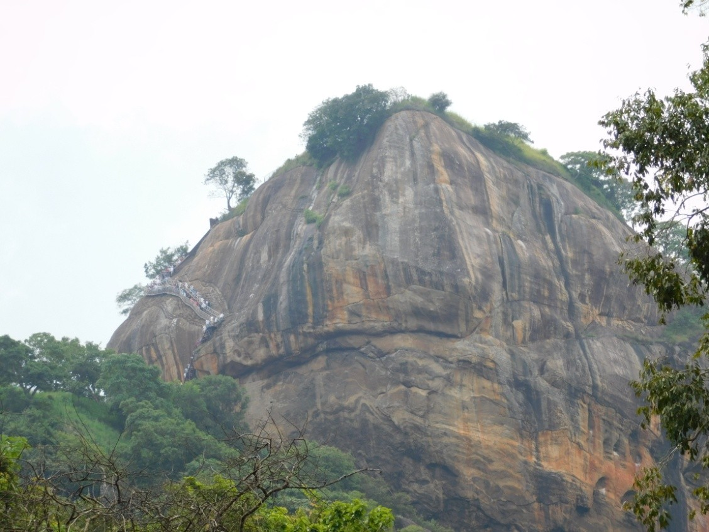
Dambulla Cave Temple
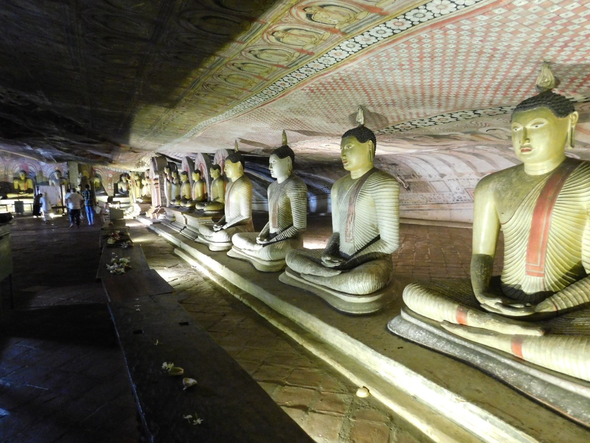
The Dambulla Cave temple complex is also called the Golden Temple of Sri Lanka. This is also one among the UNESCO heritages of Sri Lanka. In this complex, there are five caves; one was made, and the remaining four are natural. Inside the caves, Buddha statues are there in different postures. Also, we can see many beautiful paintings of Buddha inside. In this cave complex, one Hindu temple is also there (Murugan temple).
After the visit to the Dambulla cave temple, we proceeded to Kandy. From this place, it is some 75 km away. As usual, the road was narrow, and both sides of the road with fertile paddy and banana fields looked pretty beautiful. After this long travel, we reached Grand Kandyan Hotel in the evening. This hotel is also quite good and our stay was enjoyable.
Kandy: The Cultural Capital
12th March 2018: In Grand Kandyan Hotel, we had a typical South Indian breakfast like dosa, idli, upma, etc. After a heavy breakfast, we proceeded to the Temple of the Tooth, a popular Buddhist temple.
The Temple of the Sacred Tooth Relic is located in the royal palace complex which houses the Relic of the tooth of Buddha. Since ancient times, the relic has played an important role in local politics because it is believed that whoever holds the relic holds the governance of the country. Kandy was the last capital of the Sri Lankan kings and is a World Heritage Site mainly due to the temple.
A very big crowd was there to have darshan. Fortunately, a good queue system was followed, and unlike Indian temples, there was no mad rush or any haphazard stampede. Rituals are performed three times daily: at dawn, at noon, and in the evenings. On Wednesdays, there is a symbolic bathing of the relic with an herbal preparation made from scented water and fragrant flowers called Nanumura Mangallaya. This holy water is believed to contain healing powers and is distributed among those present.
Close to this temple, Kandy Lake is situated. After seeing the lake, we had our lunch and visited the Gem Museum of Kandy. There was a short film on the gem collection. After the film, in their showroom, a few people made purchases.
After the Gem show, we were taken to a dance program in a theatre hall. Various typical Sri Lankan dance programs were performed. After the dance program, adjacent to the hall in open ground, they performed fire walking. They spread charcoal, sprinkled kerosene, ignited it, and walked through the flames.
Peradeniya Botanical Garden
After the dance program, we were taken to Peradeniya Botanical Garden. It is a huge garden. Motor vehicles are there to go around the garden. Though we tried, we did not get any such vehicle. So we walked around some portions of the garden and returned back. Some glass houses are there with various kinds of beautiful flower plants. After the visit, we returned back to Grand Kandyan Hotel.
Nuwara Eliya: Little England
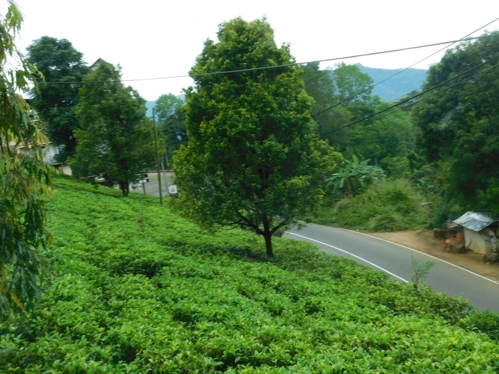
13th March 2018: After our breakfast at Grand Kandyan Hotel, we proceeded to the next city called Nuwara Eliya. This city is at an altitude of 6000 ft above sea level. This city was developed in the 19th century by the British. When this country was under the British, this city was developed mainly for their entertainment, like playing golf, hunting, etc. Also, they developed many tea estates in this region. During this development, they brought many Indian workers for developing the tea estates.
In this city, even today we can see some British architectural buildings like Queen’s Cottage, Grand Hill Club, St. Andrew’s Hotel, and the Town Post Office. While going to Nuwara Eliya, we visited a tea estate. The estate got its own tea factory. We saw the process. A sale counter also was there, and apart from various kinds of tea like green tea, black tea, lemon tea, etc., they were selling almonds, pistachios, etc.
Hanuman Temple & Sita Mandir
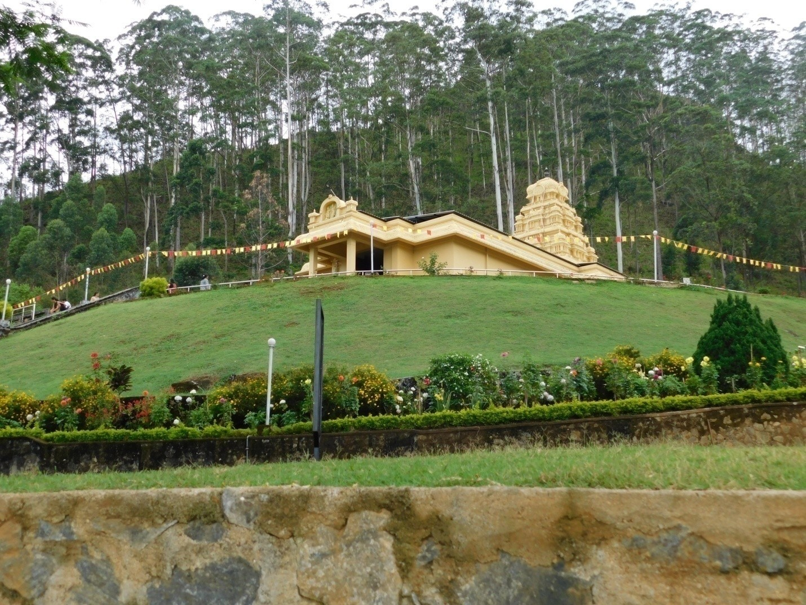
After the visit to the tea factory, we proceeded to one Hanuman Temple. The Hanuman murthy in this temple is of large size. After Hanuman darshan, adjacent to the temple in a mess, we took food. The food was typical homemade food. It was very tasty.
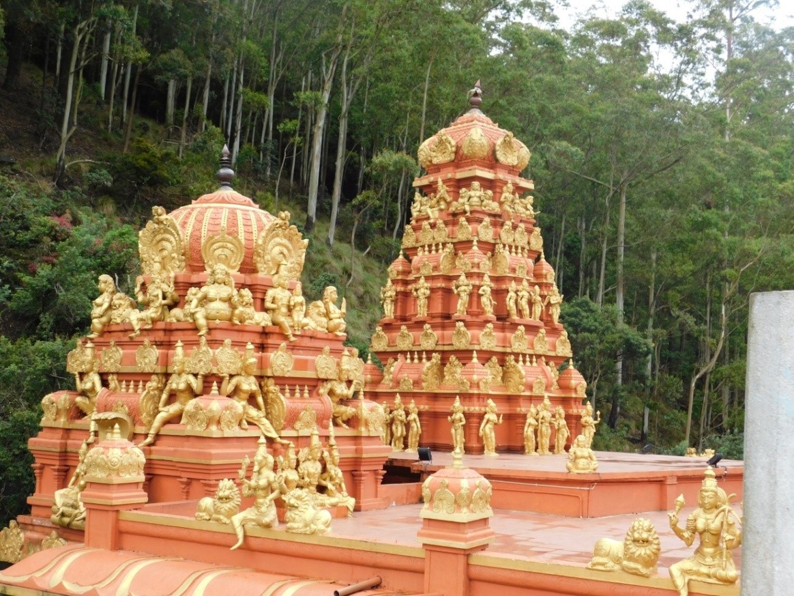
After Hanuman Mandir, we proceeded to Sita Mandir (Seetha Amman Temple). It is a beautiful temple adjacent to a river. Close to the temple, we see footprints over a stone. According to legend, this footprint is Hanuman’s foot; when he came to Sri Lanka, he stepped down first only in this place.
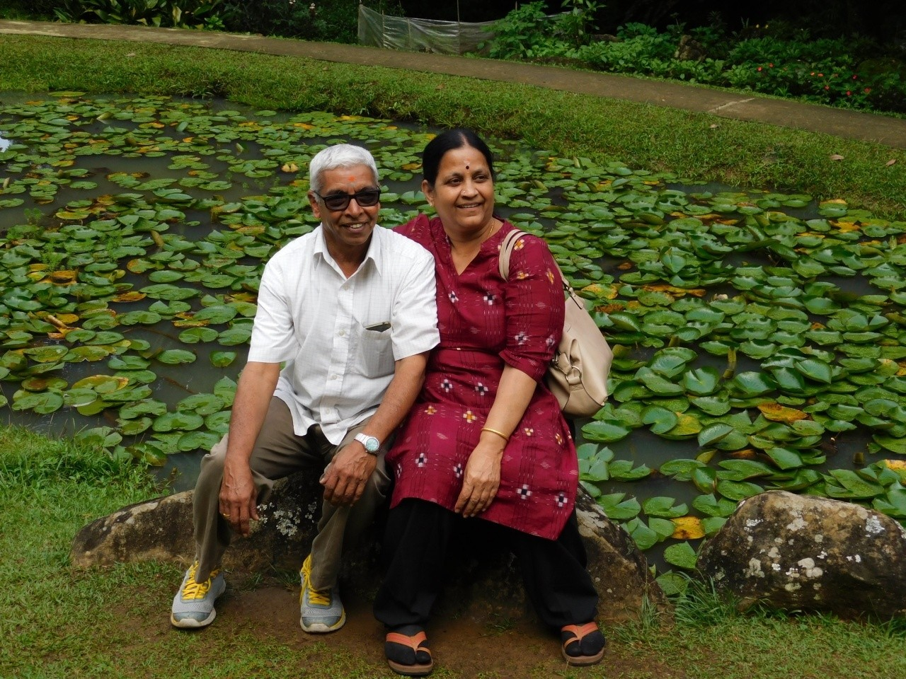
After this temple, we visited Ashok Vatika. Now this has been made into a beautiful garden. After Ashok Vatika, we went to Nuwara Eliya Lake. It was just like Ooty Lake. We had boat riding for an hour. After the lake’s visit, we proceeded to Hotel Araliya Green Hills. Being at an altitude of 6000 ft above sea level, the weather was quite chill. Hotel rooms were equipped with room heaters.
Colombo: The Capital
14th March 2018: After the South Indian breakfast at Hotel Araliya Green Hills, we proceeded to Colombo, the last city of our tour. It is around an 8-hour journey from Nuwara Eliya. On the way, we had a break at Susantha Spice and Herbal Garden. The guide of that garden explained various ayurvedic medicines and medicinal oils. They were selling them also.
In the evening we reached Colombo. Colombo is also like Indian cities. Because of traffic jams and lots of signals, it took a long time to reach our Hotel, Jetwing.
15th March 2018: We left Jetwing Hotel around 9 am after our breakfast. We visited Vibhishana Temple. In the same premises, we then went to Kelaniya Raja Maha Viharaya Buddha temple, which was built in the third century.
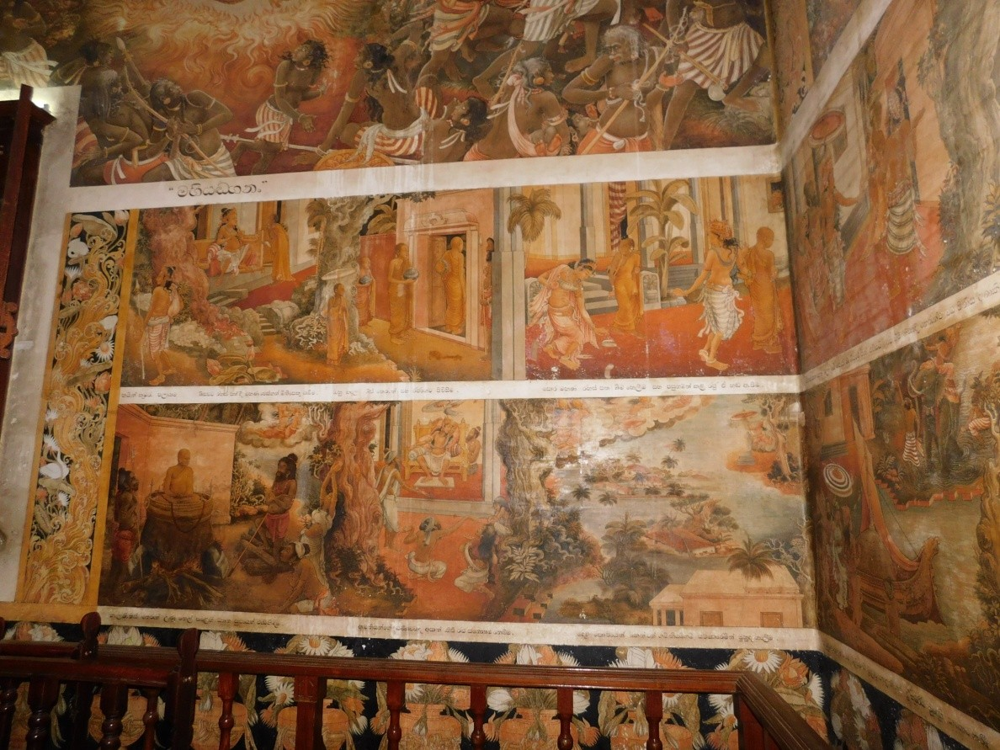
In this temple, we can see lots of Buddha statues in different postures. Also, we can see beautiful paintings over the walls and ceilings. In the outer premises, we can see statues of Hindu Gods.
After the visit to this temple, we had our lunch and went through the city of Colombo. We saw the Parliament Building, Indian Embassy, Twin Towers of Sri Lanka, Victoria Garden, etc.
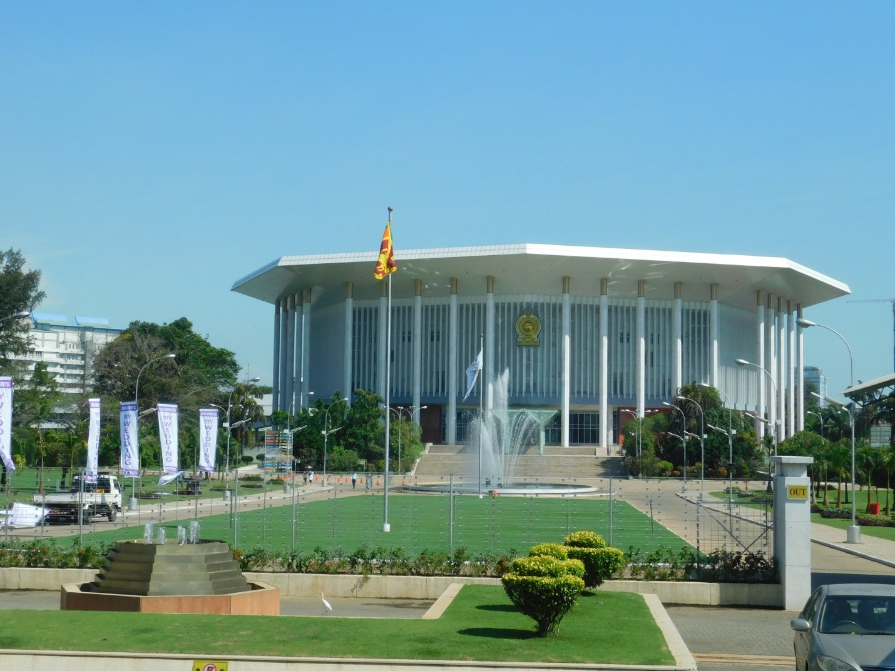
The last spot was the Fashion Mall, where people did some shopping. Then we returned back to the hotel.
The Maldives Adventure
16th March 2018: We left Hotel Jetwing of Colombo around 9:30 am. Colombo international airport is an hour's drive from the hotel. In the airport, checking was done at three or four places. After these formalities, we got our boarding pass to Maldives. For free internet, we had to scan our boarding pass to get a password, and after entering the password in our mobile, Wi-Fi got connected.
At last, we boarded the Sri Lankan flight to Maldives in the noon. From Colombo, it is an hour and 30 minutes flight. Around 3 pm we reached Maldives. Maldives is a group of many islands. The weather was very hot.
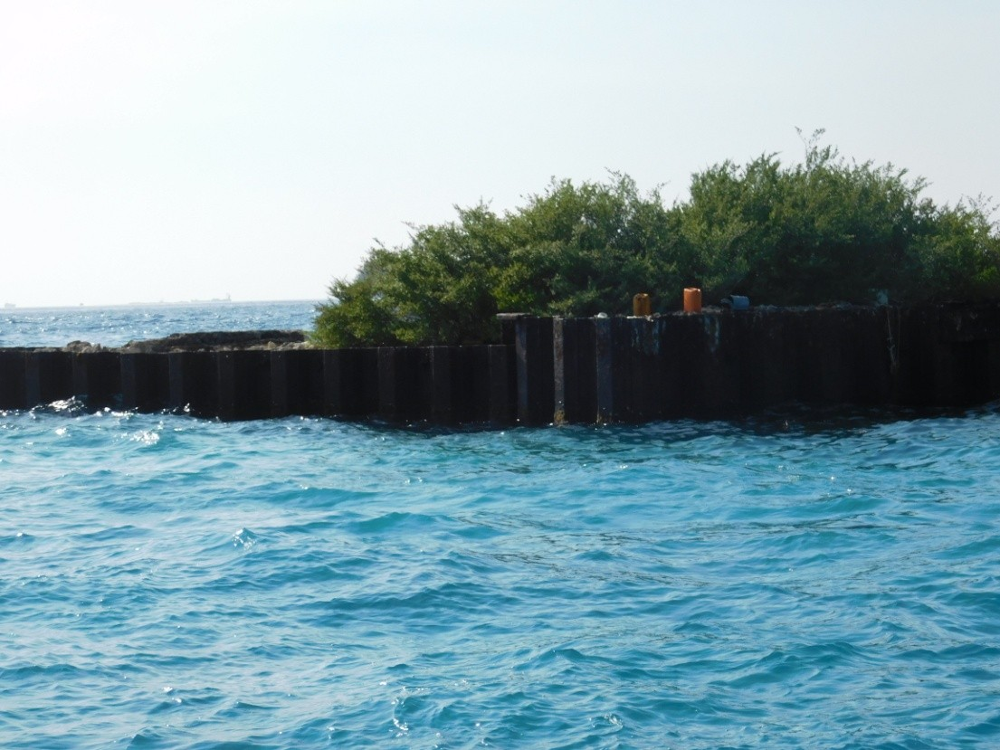
After collecting our luggage, we came out of the airport. From there we had to go to a different island by a speed boat. It was about 45 minutes of travel. The blue color sea looked beautiful.
After reaching the hotel, we collected our cottage key. The cottage was quite far off from the main reception room. We walked through the seashore. The cottage was pretty good.
Whenever we go on tour, we used to get good friends. This time from the first day of the tour, we moved with a family from Bangalore—a daughter and her mother—all the time. Even after the tour, we maintained contact through WhatsApp. Since they insisted, when we went to Bangalore we visited them. They are very nice people, soft-spoken and very cordial. Luckily their allotted cottage was adjacent to ours.
17th March 2018: Only two nights stay was there at Maldives. Kesari did not arrange any specific tour in Maldives. The hotel arranges many water activities like scuba diving, submarine travel, etc., on a payment basis. We and the Bangalore people decided to move around the island. So after breakfast, we walked in different parts of the island along the seashore.
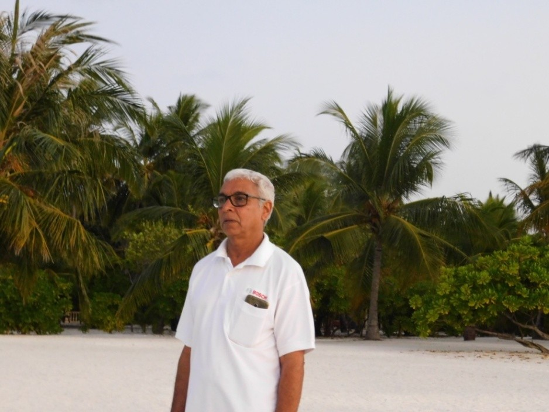
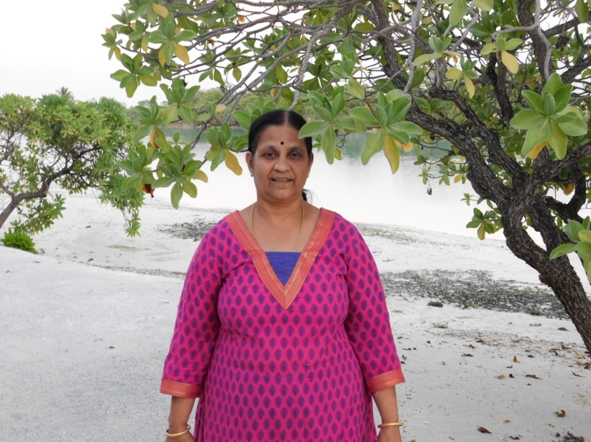
18th March 2018: After lunch, we left Maldives and reached the main Island where the airport is. We were taken around for a city orientation tour of Male. After the city tour, we came back to the airport to take a flight to Colombo and then subsequently to Mumbai from there. We reached the early morning of 19th March and took a cab to Pune and reached home safely.
"From the green tea gardens of Nuwara Eliya to the stunning blue waters of the Maldives, this journey was a perfect blend of culture and relaxation. Sri Lanka felt like a second home with its familiar landscapes, while the Maldives offered a glimpse of paradise on earth."